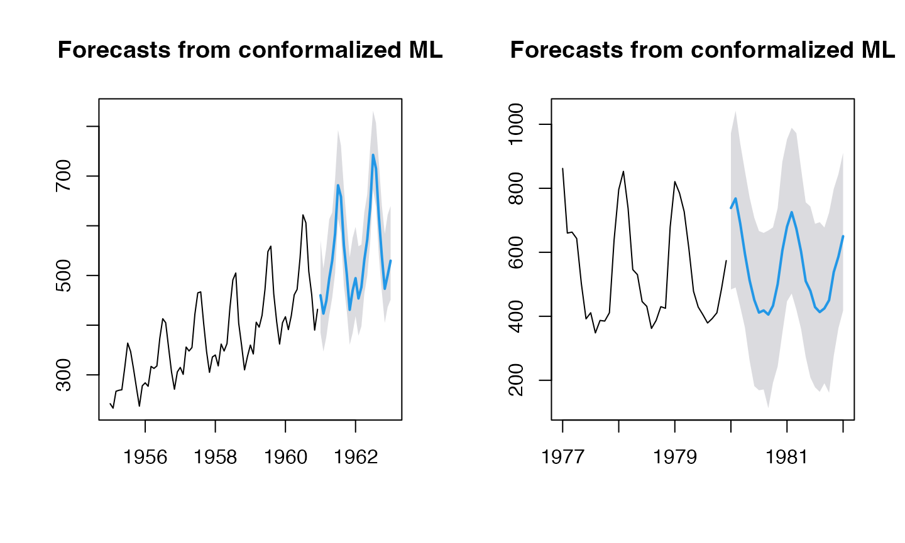
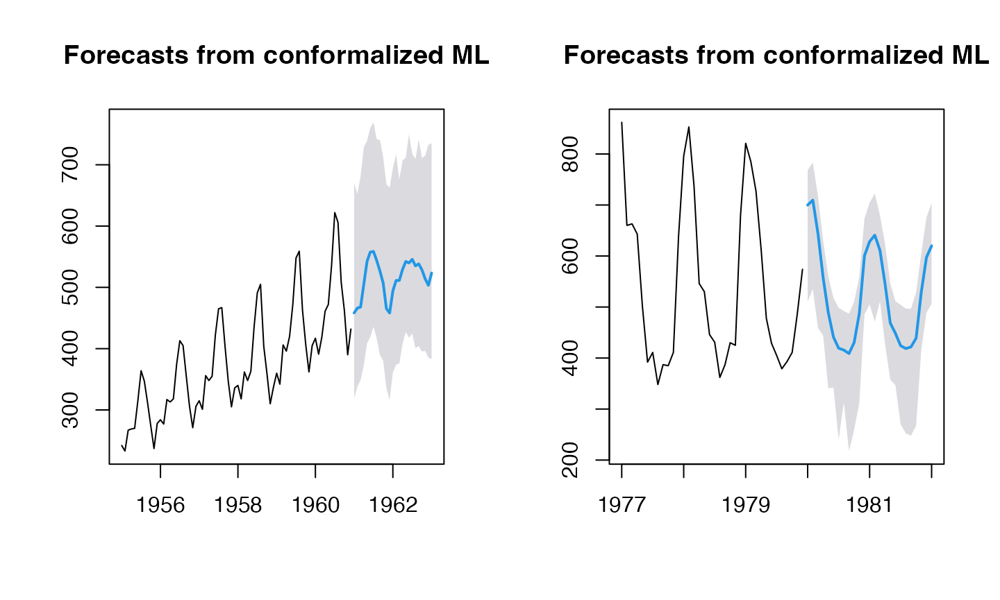

conformal-ml2.Rmd
(res2 <- ahead::mlf(AirPassengers, h=25L, lags=15L,
type_pi="kde", B=250L))## Registered S3 method overwritten by 'quantmod':
## method from
## as.zoo.data.frame zoo## Point Forecast Lo 95 Hi 95
## Jan 1961 460.2157 385.1324 570.6067
## Feb 1961 423.2877 346.7835 513.9668
## Mar 1961 448.7656 376.4624 556.3026
## Apr 1961 493.9682 419.8559 613.2063
## May 1961 529.5625 455.0006 626.5372
## Jun 1961 584.2230 504.3983 694.1163
## Jul 1961 681.5042 614.2395 792.7455
## Aug 1961 658.4954 585.7598 761.6206
## Sep 1961 561.1623 479.9491 675.5470
## Oct 1961 502.7355 428.7241 604.7186
## Nov 1961 430.8452 360.5704 536.2181
## Dec 1961 469.5734 384.0792 575.6052
## Jan 1962 494.5805 418.0330 597.7645
## Feb 1962 453.7158 378.8465 558.7620
## Mar 1962 476.5171 397.5826 562.2505
## Apr 1962 531.2383 463.2526 627.2389
## May 1962 572.0854 499.1660 663.0207
## Jun 1962 637.5260 565.4585 756.0907
## Jul 1962 742.6750 673.1668 831.4791
## Aug 1962 715.1415 638.6169 806.6096
## Sep 1962 616.7858 538.2935 725.0534
## Oct 1962 538.8315 466.9625 641.0818
## Nov 1962 473.2208 404.3596 583.5686
## Dec 1962 500.7060 436.4639 622.1696
## Jan 1963 529.7078 451.1332 639.8503
(res3 <- ahead::mlf(fdeaths, h=25L, lags=15L,
type_pi="kde", B=250L))## Point Forecast Lo 95 Hi 95
## Jan 1980 738.3803 483.7579 972.2429
## Feb 1980 768.1488 490.0596 1042.3561
## Mar 1980 689.2663 429.2867 939.5061
## Apr 1980 594.7102 364.3839 853.5802
## May 1980 512.1141 261.3169 771.2413
## Jun 1980 450.9838 181.8641 707.9208
## Jul 1980 411.5862 168.8262 666.4668
## Aug 1980 418.3016 171.3724 660.5458
## Sep 1980 405.2975 112.8757 668.1534
## Oct 1980 433.0452 192.5523 677.9280
## Nov 1980 500.3941 243.2378 738.3525
## Dec 1980 605.3976 347.5227 882.5821
## Jan 1981 680.0974 446.8777 952.9346
## Feb 1981 725.2946 470.9961 989.1541
## Mar 1981 673.6532 420.7839 972.2387
## Apr 1981 602.6292 360.7824 862.0861
## May 1981 510.0039 272.9706 756.4047
## Jun 1981 479.3524 208.7614 743.0630
## Jul 1981 428.7199 178.0314 688.9748
## Aug 1981 413.2095 163.8202 694.0200
## Sep 1981 424.7080 190.7713 677.4749
## Oct 1981 450.2358 161.2617 724.0660
## Nov 1981 538.1649 276.3705 798.1206
## Dec 1981 586.5090 362.7278 844.2893
## Jan 1982 650.1907 417.8179 910.6355
fit_func <- function(x, y, ...)
{
df <- data.frame(y=y, x) # naming of columns is mandatory for `predict`
colnames(df) <- c("y", paste0("X", seq_len(ncol(x))))
ranger::ranger(y ~ ., data=df, ...)
}
predict_func <- function(obj, newx)
{
colnames(newx) <- paste0("X", seq_len(ncol(newx))) # mandatory, linked to df in fit_func
predict(object=obj, data=newx)$predictions # only accepts a named newx
}
(res2 <- ahead::mlf(AirPassengers, h=25L, lags=15L, fit_func=fit_func, predict_func=predict_func, type_pi="kde", B=250L))## Point Forecast Lo 95 Hi 95
## Jan 1961 458.3271 319.0379 670.0462
## Feb 1961 466.1255 337.7467 652.5361
## Mar 1961 467.9213 349.0103 681.5407
## Apr 1961 505.2190 372.9187 728.5597
## May 1961 542.4369 408.2116 738.9083
## Jun 1961 557.5503 418.9382 760.0485
## Jul 1961 558.5972 435.9706 769.2211
## Aug 1961 543.6552 416.6005 741.6207
## Sep 1961 526.5501 389.6563 740.4120
## Oct 1961 507.0277 380.4357 712.4612
## Nov 1961 465.2580 335.6252 668.2753
## Dec 1961 458.1182 316.0045 662.6056
## Jan 1962 494.1945 361.0949 694.9261
## Feb 1962 511.2356 373.8453 717.0455
## Mar 1962 511.2839 375.8508 676.0935
## Apr 1962 529.2996 408.0170 707.0367
## May 1962 542.2257 427.3610 711.6269
## Jun 1962 539.8432 417.9835 749.9821
## Jul 1962 545.7880 424.6805 717.8266
## Aug 1962 535.0903 400.7776 709.3886
## Sep 1962 538.3477 404.2453 741.3575
## Oct 1962 528.7079 395.3272 710.8914
## Nov 1962 514.0292 396.4510 714.9256
## Dec 1962 503.3533 385.2900 732.5616
## Jan 1963 523.4104 383.0124 735.0640
(res3 <- ahead::mlf(fdeaths, h=25L, lags=15L, fit_func=fit_func, predict_func=predict_func, type_pi="kde", B=250L))## Point Forecast Lo 95 Hi 95
## Jan 1980 699.8649 510.8082 768.6348
## Feb 1980 709.5186 535.1394 783.0601
## Mar 1980 643.8029 459.1022 717.0022
## Apr 1980 557.3550 443.7403 629.5954
## May 1980 488.8726 340.3765 560.1598
## Jun 1980 441.0407 342.3626 517.6082
## Jul 1980 419.3302 240.0062 498.2998
## Aug 1980 415.6468 313.2566 492.3353
## Sep 1980 408.8016 217.7645 486.8259
## Oct 1980 430.3350 259.2524 510.3585
## Nov 1980 487.1339 311.9719 559.1617
## Dec 1980 600.5505 485.5243 673.4435
## Jan 1981 628.3644 505.3496 704.5700
## Feb 1981 640.8349 471.4218 722.2885
## Mar 1981 611.0277 511.4464 679.7228
## Apr 1981 544.4886 426.1158 622.4509
## May 1981 468.5115 357.7231 546.0622
## Jun 1981 448.2372 346.5647 511.1644
## Jul 1981 424.1449 270.2149 504.4655
## Aug 1981 418.6885 252.4296 496.8223
## Sep 1981 421.6698 247.6287 496.5751
## Oct 1981 438.9652 267.5147 528.6300
## Nov 1981 528.9495 416.2136 604.8012
## Dec 1981 597.2601 488.9810 675.3408
## Jan 1982 619.9532 506.4952 704.0765